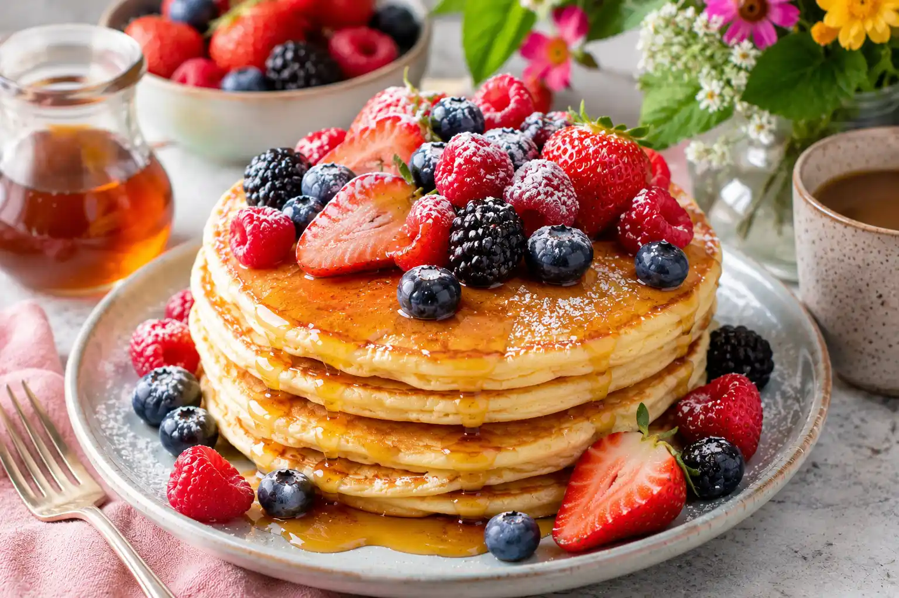
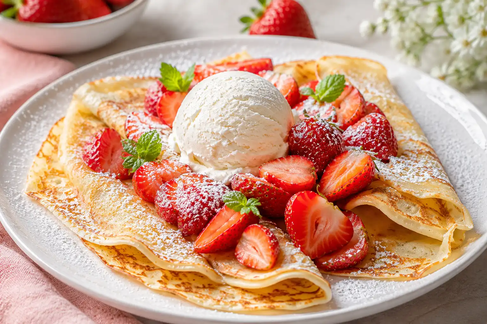
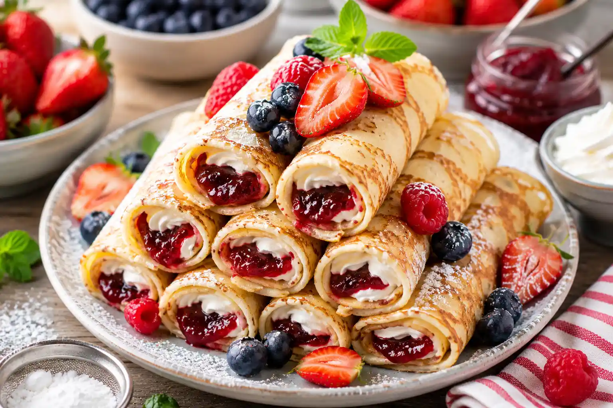

Fluffiga brunchpannkakor
Amerikanska pannkakor med lönnsirap och bär, perfekta för en lång och mysig helgfrukost.
Till receptetVälkommen till Pannkaksmagi!
Upptäck inspiration, tips och goda idéer för att servera pannkakor till vardag, helg och fest.

Amerikanska pannkakor med lönnsirap och bär, perfekta för en lång och mysig helgfrukost.
Till receptet
Tunna pannkakor serverade med färska jordgubbar, vaniljglass och lite pudrat florsocker.
Till receptet
Rullade pannkakor med sylt och vispad grädde, serverade som en klassisk svensk favorit.
Till receptet
Tunna franska crêpes fyllda med ost, svamp och färska örter för en matigare variant.
Till receptet